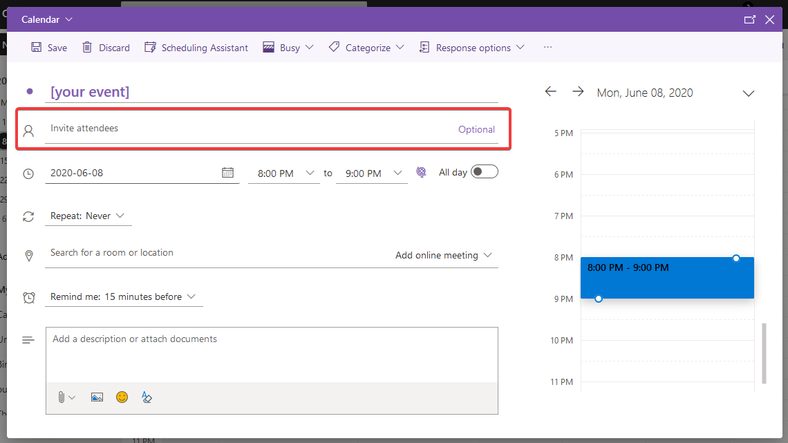
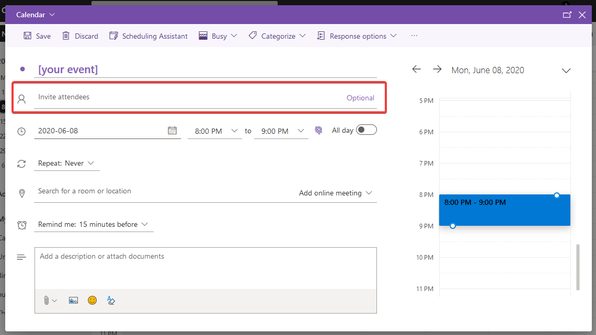
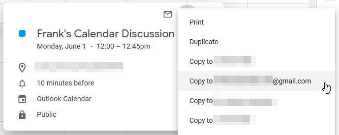

Event Norms and Guidelines
Types of Events
These events belong on Frank’s Calendar:
- Events public to the whole Olin community
- Events hosted by an Olin community member
These events don’t belong on Frank’s Calendar:
- Events only open to a smaller group of people (for example: classes, course specific office hours, club design reviews)
- Events hosted by non-Oliners
Interacting with the Calendar
 |
When you hover over this button, you are given two options to publish an event: via the calendar’s online form where you manually input data, and via your existing calendar event invite. |
 |
This is on every event page you open. Use this to export one event to your personal calendar in the form of an email invite or downloading a .ics file. |
 |
The filters in the sidebar categorize events and allow you to choose the types of events displayed on the calendar. Learn more about filters here. |
Moderating Events
Calendar moderators maintain the events on the calendar to guarantee that Frank’s Calendar is populated with accurate, up to date information about what is happening on campus. They also monitor events to make sure they meet the requirements of what is okay to share.
If you have questions or concerns about an event or any information on the calendar, you can contact a moderator to resolve the issue.
Publishing Events
You can publish an event to the Frank’s Calendar platform in one of two ways:
- Filling out this form to manually enter event information
- Sending an ical (.ics file) to frankscalendar.olin@gmail.com
How to send an ical from your personal calendar:
- Open the event into full editing mode in your personal calendar. Focus on the panel labeled “Guests” in Google Calendar or “Invite attendees” in Outlook Calendar. If you can’t edit the correct fields, go to “Sharing on behalf of someone else”
- In the text box, type frankscalendar.olin@gmail.com and press enter.
- Save the changes.
- Check your email. You should shortly receive an email with the subject “Please select a category for the event you have submitted.” Use the magic link inside to go to the event editing portal.
- Select the most appropriate category and make sure that all of the fields are filled. See the Filter Guide to help you determine which category is best.
- Make sure to click the “Save changes” button!
- Keep an eye on your inbox. You should get a confirmation email when your event is approved and made visible on the Frank’s Calendar site. If there is a problem with your submission, a moderator should email you about it within 24 hours.
 

Publishing on behalf of someone else with Google Calendar:
- Click the event to open the pop-up. Click the three dots in the upper right hand corner. 
- Select the “Copy to” option and a calendar of your choice.
- This should open an event editing screen. Now return to the original steps.
Publishing on behalf of someone else with Outlook Calendar:
- Click the event to open the pop-up. Click the expand option in the upper right hand corner.
- Click the 3 horizontal dots on the navigation bar. Select the “Copy to” option and a calendar of your choice.
- This should open an event editing screen. Now return to the original steps.


How to Export Events
[insert text]
Filter Guide
How do events get filtered?
Events get filtered in two different ways:
- If the event was published via a calendar invite, the database will check and see if it’s from an email sender that has an associated category
- For instance, the Director of PGP’s email will be associated with the PGP filter, so any events they send will automatically be tagged that way
- If they share an event that isn’t related to PGP, they need to contact the moderator to have them manually change the associated category
- If an event was published via the online form, the person will manually assign a category to the event before submitting it for approval
What are filter groups?
There are certain filter groups to shorten the long list of filters at first glance, and unite similar filters together under one comprehensive category. Below are explanations of the two filter groups we have:
- Academic Affairs
- Any event that is related to academics at Olin
- Sub-filters are Academic Calendar and Academic Advising
- Student Affairs
- Any event that is related to student affairs at Olin
- Sub-filters are Residential, Health & Wellness, PGP, HR, Intl’ & Study Away, and Diversity & Inclusion
Individuals associated with a filter
The list of individual filters is somewhat long, because Frank’s Calendar aimed to find a balance between detail and conciseness. Going back to how certain events are tagged automatically with a filter if shared via a calendar invite, below is an explanation for who’s emails are associated with which filters:
- Academic Calendar: Registrar’s Office, Provost, Director of Academic Affairs
- Currently Angela Burke, Vivien Bouffard, Linda Canavan, Mark Somerville, and Susan Mihailidis
- Academic Advising: Assistant Dean of Student Affairs
- Currently Adva Waranyuwat
- Residential: Assistant Dean of Student Affairs
- Currently Seth Hodge
- Health & Wellness: Director of Wellness
- Currently Beth Grampetro
- PGP: PGP’s Office
- Currently Suzanne Alcott and Sally Phelps
- HR: Human Resources
- Currently hr@olin.edu
- Diversity & Inclusion: Director of Diversity & Inclusion
- Currently Stephanie Milton
- Intl’ & Study Away: International Programs Coordinator
- Currently Courtney Beach
- Admission & Financial Aid: The entire office of Admission & Financial Aid
- Currently Emily Roper-Doten, Krystal Burgos, Stephanie Hill, Alia Georges, Susan Brisson, Jean Ricker, Victoria Moore, and FinAid@olin.edu
- The Library: The entire Library team
- Currently Callan Bignoli, Maggie Anderson, and Mckenzie Mullen
- The Shop: The entire Shop team
- Currently Daniela Faas, Nathan Cantrell, Bruce Andruskiewicz, and Lucas Ewing
- Clubs & Organizations: No associated emails, since club and organization student leadership changes so frequently; moderator will assign as needed
- Other Events: No associated emails; this filter is for events not associated with any of the above categories (i.e. unaffiliated speaker events or workshops)